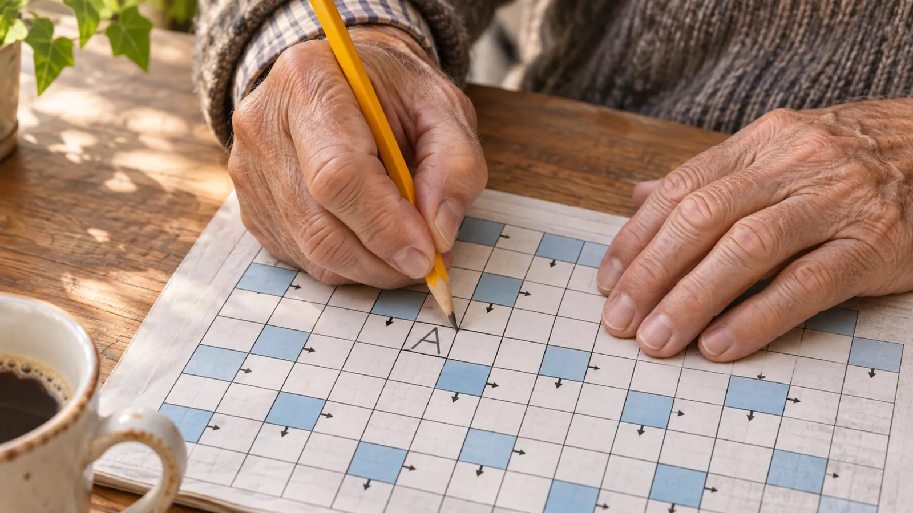

D’où viennent les mots fléchés ?
Tout commence avec les mots croisés. La première grille paraît le 21 décembre 1913 dans un journal de New York, le New York World, signée Arthur Wynne. Les mots croisés arrivent en France après la Première Guerre mondiale et deviennent vite un rendez-vous des journaux du dimanche.
Les mots fléchés en sont une variante : les définitions ne sont plus rangées sous la grille, elles sont écrites dans la grille elle-même, dans des cases colorées, avec une flèche vers le mot. En anglais, on les appelle souvent « mots croisés scandinaves ». En France, ils remplissent aujourd’hui les magazines de jeux et les pages de détente des quotidiens.
Comment se joue une grille
Chaque case colorée porte une ou deux définitions courtes, comme « Ville éternelle » ou « Il ronronne ». La flèche part de la définition et entre dans la case où commence le mot. Une flèche droite va vers la droite ou vers le bas. Une flèche coudée, sur le bord de la grille, tourne avant d’entrer dans le mot.
Chaque lettre appartient à deux mots, un horizontal et un vertical. Un mot trouvé donne donc des lettres aux mots qui le croisent. La grille s’écrit en capitales sans accents : ÉTÉ devient ETE. Le guide des mots fléchés montre les quatre flèches avec des exemples.

Un bon jeu pour garder l’esprit vif
Une grille fait travailler le vocabulaire, la mémoire des mots et la culture générale : géographie, histoire, cuisine, musique. Elle se joue à son rythme, sans adversaire ni chronomètre, et se reprend plus tard là où on l’a laissée.
Sur papier, les cases sont souvent petites et les définitions écrites en tout petit. À l’écran, on peut tout agrandir : c’est le grand avantage pour une vue qui fatigue.
Cinq conseils pour finir la grille
- Commencez par les mots courts : les mots de deux ou trois lettres sont souvent des articles, des pronoms ou des notes de musique.
- Comptez les cases : le nombre de lettres élimine bien des réponses.
- Regardez la forme de la définition : une définition au pluriel donne un mot au pluriel, souvent terminé par S.
- Passez d’un mot à l’autre : une lettre trouvée dans un sens aide à lire le mot qui la croise.
- Méfiez-vous des jeux de mots : « Il a sept vies » ne parle pas d’un homme, mais du CHAT.
Jouer en gros caractères sur Jeux de Papi
Les mots fléchés de Jeux de Papi sont gratuits, sans publicité et sans compte. La définition du mot choisi s’écrit en grand à côté de la grille. On tape les lettres au clavier, ou on clique sur les grandes touches à l’écran. Les boutons « Réduire » et « Agrandir » changent la taille de tout le jeu.
Trois niveaux sont proposés. Facile donne une petite grille de mots de tous les jours, avec la première lettre de chaque mot. Moyen agrandit la grille. Difficile ajoute des mots rares et des définitions à double sens. « Vérifier » barre en rouge les lettres fausses, et « Que jouer maintenant ? » écrit une lettre juste quand on bloque.
Vous aimez les lettres ? Essayez aussi les mots mêlés ou, pour les chiffres, le sudoku.